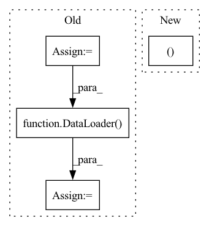

Pattern ID :6090
Before Change
train_dir = os.path.join(data_dir, "train")
val_dir = os.path.join(data_dir, "val")
test_dir = os.path.join(data_dir, "test")
train_data = SynpickVideoDataset(data_dir=train_dir, num_frames=cfg.vid_total_length, step=cfg.vid_step,
allow_overlap=cfg.vid_allow_overlap, num_classes=num_classes,
include_gripper=cfg.include_gripper)
val_data = SynpickVideoDataset(data_dir=val_dir, num_frames=cfg.vid_total_length, step=cfg.vid_step,
allow_overlap=cfg.vid_allow_overlap, num_classes=num_classes,
include_gripper=cfg.include_gripper)
train_loader = DataLoader( train_data, batch_size=cfg.batch_size, shuffle=True, num_workers=cfg.batch_size,
drop_last=True)
valid_loader = DataLoader(val_data, batch_size=1, shuffle=False, num_workers=4, drop_last=True)
cfg.action_size = train_data.action_size
cfg.img_shape = train_data.img_shape
After Change
torch.manual_seed(cfg.seed)
// DATA
(train_data, val_data, test_data ), (train_loader, val_loader, test_loader) = create_dataset(cfg)
// Optuna
if cfg.use_optuna:In pattern: SUPERPATTERN
Frequency: 8
Non-data size: 4
Instances Fragment ID: 21116034
Project Name: ais-bonn/vp-suite
Commit Name: a5ab26400a8f535342ef3088de3b77c7b09dfb41
Time: 2021-12-14
Author: boltres@ais.uni-bonn.de
File Name: scripts/train_pred.py
M Class Name: AnonimousClass
N Class Name: AnonimousClass
M Method Name: train(2)
N Method Name: train(2)
M Parent Class:
N Parent Class:
M File Name: scripts/train_pred.py
N File Name: scripts/train_pred.py
M Start Line: 31
M End Line: 108
N Start Line: 21
N End Line: 95
Before Change
save_path=None,
):
dl_train = dataset.prepare("train", col_set=["feature", "label"], data_key=DataHandlerLP.DK_L)
dl_valid = dataset.prepare("valid", col_set=["feature", "label"], data_key=DataHandlerLP.DK_L)
dl_train.config(fillna_type="ffill+bfill") // process nan brought by dataloader
dl_valid.config(fillna_type="ffill+bfill") // process nan brought by dataloader
train_loader = DataLoader(
dl_train, batch_size=self.batch_size, shuffle=True, num_workers=self.n_jobs, drop_last=True
)
valid_loader = DataLoader(
dl_valid, batch_size=self.batch_size, shuffle=False, num_workers=self.n_jobs, drop_last=True
)
After Change
)
x_train, y_train = df_train["feature"], df_train["label"]
x_valid, y_valid = df_valid["feature"], df_valid["label"]
save_path = get_or_create_path(save_path)
stop_steps = 0
Fragment ID: 21116035
Project Name: microsoft/qlib
Commit Name: bee031af68cd0864c8329de13608c2d4feb58fc1
Time: 2021-07-21
Author: yl3851@uw.edu
File Name: qlib/contrib/model/pytorch_localformer.py
M Class Name: LocalformerModel
N Class Name: LocalformerModel
M Method Name: fit(4)
N Method Name: fit(4)
M Parent Class: Model
N Parent Class: Model
M File Name: qlib/contrib/model/pytorch_localformer.py
N File Name: qlib/contrib/model/pytorch_localformer.py
M Start Line: 154
M End Line: 165
N Start Line: 173
N End Line: 200
Before Change
with open(metadata_path, encoding=CHARACTER_ENCODING) as f:
data = [line.strip().split("|") for line in f]
dataset = VoiceDataset(data, dataset_directory, DEFAULT_ALPHABET)
collate_fn = TextMelCollate()
data_loader = DataLoader(
dataset, num_workers=0, sampler=None, batch_size=1, pin_memory=False, collate_fn=collate_fn
)
// Check batches are equal
assert len(process_batch.mock_calls) == 2
called_batches = [call[1][0] for call in process_batch.mock_calls]
batches = [b for b in data_loader]
batch_sizes = [b[0].size() for b in batches]
for called_batch in called_batches:After Change
expected_sizes = {
(torch.Size([1, 34]), torch.Size([1, 80, 205])),
(torch.Size([1, 29]), torch.Size([1, 80, 218])),
(torch.Size([1, 44]), torch.Size([1, 80, 244]) ),
}
called_samples = [call[1][0] for call in process_batch.mock_calls]
called_sizes = {(s[0].size(), s[2].size()) for s in called_samples} Fragment ID: 21116033
Project Name: benaandrew/voice-cloning-app
Commit Name: 06ab54df9770354ac888fd579e2725c237e3b34a
Time: 2021-07-30
Author: bandrew01@qub.ac.uk
File Name: tests/test_training.py
M Class Name: AnonimousClass
N Class Name: AnonimousClass
M Method Name: test_training_a(7)
N Method Name: test_training_a(7)
M Parent Class:
N Parent Class:
M File Name: tests/test_training.py
N File Name: tests/test_training.py
M Start Line: 83
M End Line: 125
N Start Line: 105
N End Line: 112
Before Change
// Load the dataset.
train_dataset = BaseDataset(train_dir)
valid_dataset = BaseDataset(valid_dir)
train_dataloader = DataLoader(train_dataset, batch_size, True, pin_memory=True)
valid_dataloader = DataLoader( valid_dataset, batch_size, False, pin_memory=True)
// Check whether the training progress of the last abnormal end is restored, for example, the power is cut off in the middle of the training.
if resume:
print("Resuming...")After Change
writer = SummaryWriter(os.path.join("samples", "logs", config.exp_name))
print("Load train dataset and valid dataset...")
train_dataloader, valid_dataloader = load_dataset()
print("Load train dataset and valid dataset successfully.")
print("Build SR model...") Fragment ID: 21116036
Project Name: lornatang/srcnn-pytorch
Commit Name: 96a17464d7a42c5440db57701b8158cd91baa21f
Time: 2021-10-27
Author: liuchangyu1111@gmail.com
File Name: train.py
M Class Name: AnonimousClass
N Class Name: AnonimousClass
M Method Name: main(0)
N Method Name: main(0)
M Parent Class:
N Parent Class:
M File Name: train.py
N File Name: train.py
M Start Line: 99
M End Line: 127
N Start Line: 128
N End Line: 178
Before Change
sampler, reverse_eids=reverse_eids
)
// no neighbor sampling during test
test_sampler = MultiLayerFullNeighborSampler(1)
test_sampler = _create_edge_prediction_sampler(
test_sampler, reverse_eids=reverse_eids
)
use_uva = args.mode == "mixed"
train_dataloader = DataLoader(
g,
train_eidx,
sampler,
device=device,
batch_size=args.batch_size,
shuffle=True,
drop_last=False,
num_workers=args.num_dl_workers,
use_uva=use_uva,
)
val_dataloader = DataLoader(
g,
val_eidx,
sampler,
device=device,
batch_size=args.batch_size_eval,
shuffle=True,
drop_last=False,
num_workers=args.num_dl_workers,
use_uva=use_uva,
)
test_dataloader = DataLoader(
g,
test_eidx,
test_sampler,
device=device,
batch_size=args.batch_size_eval,
shuffle=False,
drop_last=False,
num_workers=args.num_dl_workers,
use_uva=use_uva,
)
self.graph = g
// model trainingAfter Change
val_eids.to(device)
test_eids.to(device)
train_dataloader, val_dataloader, test_dataloader = self._create_data_loaders(
g, device, train_eids, val_eids, test_eids, reverse_eids
)
Fragment ID: 21116008
Project Name: oap-project/cloudtik
Commit Name: cb8daff9f443ccb30d9d238ece623f896710464e
Time: 2023-06-26
Author: haifeng.chen@intel.com
File Name: python/cloudtik/runtime/ai/modeling/graph_modeling/graph_sage/modeling/model/homogeneous/trainer.py
M Class Name: Trainer
N Class Name: Trainer
M Method Name: train(3)
N Method Name: train(3)
M Parent Class:
N Parent Class:
M File Name: python/cloudtik/runtime/ai/modeling/graph_modeling/graph_sage/modeling/model/homogeneous/trainer.py
N File Name: python/cloudtik/runtime/ai/modeling/graph_modeling/graph_sage/modeling/model/homogeneous/trainer.py
M Start Line: 46
M End Line: 116
N Start Line: 49
N End Line: 70
Before Change
dataset = self.divide_datasets(dataset, each_usage)
for i, br in enumerate(each_batch_ratio):
current_datasets = dataset[i]
current_batchsize = max(round(batch_size * float(br)), 1)
_dataloader = DataLoader(
current_datasets, batch_size=current_batchsize,
shuffle=shuffle, num_workers=num_workers,
pin_memory=True
)
self.data_loader_list.append(_dataloader)
self.dataloader_iter_list.append(iter(_dataloader))
@staticmethodAfter Change
class BaseDataloader(object):
def __init__(self, dataset, batch_size, each_usage, num_workers=4, shuffle=False):
if isinstance(each_usage, (float, int )):
each_usage = [each_usage]
assert isinstance(each_usage, list)
assert len(dataset) == len(each_usage) Fragment ID: 21116063
Project Name: media-smart/vedastr
Commit Name: 46b30f8dd844edf2d91d2f711ba88fd58f101ab4
Time: 2020-04-19
Author: 15029959637@163.com
File Name: vedastr/dataloaders/base.py
M Class Name: BaseDataloader
N Class Name: BaseDataloader
M Method Name: __init__(6)
N Method Name: __init__(7)
M Parent Class: object
N Parent Class: object
M File Name: vedastr/dataloaders/base.py
N File Name: vedastr/dataloaders/base.py
M Start Line: 9
M End Line: 28
N Start Line: 10
N End Line: 16
Before Change
batchsize = len(pos)
// create the data loader
self.dataset = DataSet(pos)
if self.cuda:
kwargs = {"num_workers": num_threads, "pin_memory": True}
else:
kwargs = {"num_workers": num_threads}
self.dataloader = DataLoader( self.dataset,
batch_size=batchsize,
**kwargs)
for data in self.dataloader:
lpos = data.to(self.device)After Change
// compute energy/variance/error
eloc = self.wf.local_energy(pos)
e, s, err = torch.mean(eloc), torch.var(
eloc), self.wf.sampling_error(eloc)
// gather all data Fragment ID: 21116045
Project Name: nlesc-jcer/qmctorch
Commit Name: 9c3e63cd2b3fe345a850beb13cc978a28a4945b0
Time: 2020-07-16
Author: nicolas.gm.renaud@gmail.com
File Name: qmctorch/solver/solver_orbital_horovod.py
M Class Name: SolverOrbitalHorovod
N Class Name: SolverOrbitalHorovod
M Method Name: single_point(3)
N Method Name: single_point(3)
M Parent Class: SolverOrbital
N Parent Class: SolverOrbital
M File Name: qmctorch/solver/solver_orbital_horovod.py
N File Name: qmctorch/solver/solver_orbital_horovod.py
M Start Line: 223
M End Line: 279
N Start Line: 220
N End Line: 276
Before Change
save_path=None,
):
dl_train = dataset.prepare("train", col_set=["feature", "label"], data_key=DataHandlerLP.DK_L)
dl_valid = dataset.prepare("valid", col_set=["feature", "label"], data_key=DataHandlerLP.DK_L)
dl_train.config(fillna_type="ffill+bfill") // process nan brought by dataloader
dl_valid.config(fillna_type="ffill+bfill") // process nan brought by dataloader
train_loader = DataLoader(
dl_train, batch_size=self.batch_size, shuffle=True, num_workers=self.n_jobs, drop_last=True
)
valid_loader = DataLoader(
dl_valid, batch_size=self.batch_size, shuffle=False, num_workers=self.n_jobs, drop_last=True
)
After Change
save_path=None,
):
df_train, df_valid, df_test = dataset.prepare(
["train", "valid", "test"],
col_set=["feature", "label"],
data_key=DataHandlerLP.DK_L,
Fragment ID: 21116061
Project Name: microsoft/qlib
Commit Name: bee031af68cd0864c8329de13608c2d4feb58fc1
Time: 2021-07-21
Author: yl3851@uw.edu
File Name: qlib/contrib/model/pytorch_transformer.py
M Class Name: TransformerModel
N Class Name: TransformerModel
M Method Name: fit(4)
N Method Name: fit(4)
M Parent Class: Model
N Parent Class: Model
M File Name: qlib/contrib/model/pytorch_transformer.py
N File Name: qlib/contrib/model/pytorch_transformer.py
M Start Line: 151
M End Line: 162
N Start Line: 172
N End Line: 199